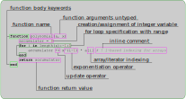

Lab 01: Introduction to Julia
This lab should get everyone up to speed in the basics of Julia's installation, syntax and basic coding. For more detailed introduction you can check out Lectures 1-3 of the bachelor course.
Testing Julia installation
In order to proceed further let's run a simple script to see, that the setup described in chapter Installation is working properly. After spawning a terminal run this command:
julia ./test_setup.jlThe script does the following
- "Tests" if Julia is added to path and can be run with
juliacommand from anywhere - Prints Hello World and Julia version info
- Creates an environment configuration files
- Installs a basic pkg called BenchmarkTools, which we will use for benchmarking a simple function later in the labs.
There are some quality of life improvements over long term support versions of Julia and thus for the course of these lectures we will use the latest stable release of Julia 1.6.x.
Polynomial evaluation example
Let's consider a common mathematical example for evaluation of nth-degree polynomial
\[f(x) = a_{n}x^{n} + a_{n-1}x^{n-1} + \dots + a_{0}x^{0},\]
where $x \in \mathbb{R}$ and $\vec{a} \in \mathbb{R}^{n+1}$.
The simplest way of writing this is just realizing that essentially the function $f$ is really implicitly containing argument $\vec{a}$, i.e. $f \equiv f(\vec{a}, x)$, yielding the following function
function polynomial(a, x)
accumulator = 0
for i in length(a):-1:1
accumulator += x^(i-1) * a[i] # ! 1-based indexing for arrays
end
return accumulator
endEvaluate the code of the function called polynomial in Julia REPL and evaluate the function itself with the following arguments.
a = [-19, 7, -4, 6] # list coefficients a from a^0 to a^n
x = 3 # point of evaluationSolution:
The simplest way is to just copy&paste into an already running terminal manually. As opposed to the default Python REPL, Julia can deal with the blocks of code and different indentation much better without installation of an ipython-like REPL. There are ways to make this much easier in different text editors/IDEs:
VSCode- when using Julia extension, by defaultCtrl+Enterwill spawn Julia REPL, when a.jlfile is openedSublime Text-Send Codepkg (works well with Linux terminal or tmux, support for Windows is poor)Vim- there is a Julia language plugin, which can be combine with vimcmdline
Either way, you should see the following:
julia> function polynomial(a, x) accumulator = 0 for i in length(a):-1:1 accumulator += x^(i-1) * a[i] # ! 1-based indexing for arrays end return accumulator endpolynomial (generic function with 1 method)
Similarly we enter the arguments of the function a and x:
julia> a = [-19, 7, -4, 6]4-element Vector{Int64}: -19 7 -4 6julia> x = 33
Function call intuitively takes the name of the function with round brackets as arguments, i.e. works in the same way as majority of programming languages. The result is printed unless a ; is added at the end of the statement.
julia> polynomial(a, x) # function call128
Thanks to the high level nature of Julia language it is often the case that examples written in pseudocode are almost directly rewritable into the language itself without major changes and the code can be thus interpreted easily.

The indentation is not necessary as opposed to other languages such as Python, due to the existence of the end keyword, however it is strongly recommended to use it, see style guide. Furthermore the return keyword can be omitted if the last line being evaluated contains the result, unless the line ends with ;.
Though there are libraries/IDEs that allow us to step through Julia code (Rebugger.jl link and VSCode link), we can (having defined the arguments with the same name as inside the actual function) evaluate pieces of code separately.
Evaluate the following pieces of code and check their type with typeof function, e.g. typeof(a) or typeof([-19, 7, -4, 6])
BONUS: Try to "call for help" by accessing the build in help terminal by typing ? followed by a keyword to explain. Use this for basic functions such as length, typeof, ^.
a = [-19, 7, -4, 6]
x = 3
accumulator = 0
length(a):-1:1
i = length(a)
accumulator += x^(i-1) * a[i]
accumulator
polynomial
^
*Solution:
When defining a variable through an assignment we get the representation of the right side, again this is different from the default behavior in Python, where the output of a = [-19, 7, -4, 6], prints nothing. In Julia REPL we get the result of the display function.
julia> julia> a = [-19, 7, -4, 6]> (generic function with 1 method)julia> julia> display(a) # should return the same thing as the line aboveERROR: UndefVarError: julia not defined
As you can see, the string that is being displayed contains information about the contents of a variable along with it's type in this case this is a Vector of Int types. Which can be checked further with the typeof function:
julia> typeof(a)Vector{Int64} (alias for Array{Int64, 1})
In most cases variables store just a reference to a place in memory either stack/heap (exceptions are primitive types such as Int, Float) and therefore creating an array a, storing the reference in b with b = a and changing elements of b, e.g. b[1] = 2, changes also the values in a.
The other two assignments are exactly the same as they both generate an instance of Int type with different values. Though now one has to call for hell the typeof function, because by default this information is omitted in the display of simple types.
julia> x = 33julia> accumulator = 00julia> typeof(x), typeof(accumulator)(Int64, Int64)
The next expression creates an instance of a range, which are inclusive in Julia, i.e. containing number from start to end - in this case running from 4 to 1 with negative step -1, thus counting down.
julia> length(a):-1:14:-1:1julia> typeof(length(a):-1:1)StepRange{Int64, Int64}
Let's confirm the fact that the update operator += really does update the variable accumulator by running the following
julia> i = length(a) #4julia> accumulator += x^(i-1) * a[i]162julia> accumulator162
Notice that evaluating a variable, which can be used instead of the return keyword at the end of a function.
We have already seen the output of evaluating polynomial function name in the REPL By creating the function polynomial we have defined a variable polynomial, that from now on always refers to a function and cannot be redefined with a different type.
julia> polynomialpolynomial (generic function with 1 method)
This is cause by the fact that each function defines essentially a new type, the same like Int ~ Int64 or Vector{Int}.
julia> typeof(polynomial)typeof(Main.polynomial)
You can check that it is a subtype of the Function abstract type, with the subtyping operator <:
julia> typeof(polynomial) <: Functiontrue
These concepts will be expanded further in the type lecture, however for now note that this construction is quite useful for example if we wanted to create derivative rules for our function derivativeof(::typeof(polynomial), ...).
Looking at the last two expersions +, *, we can see that in Julia, operators are also functions.
julia> ++ (generic function with 254 methods)julia> ** (generic function with 430 methods)
The main difference from our polynomial function is that there are multiple methods, for each of these functions. Each one of the methods coresponds to a specific combination of arguments, for which the function can be specialized to. You can see the list by calling a methods function:
julia> methods(+)
# 190 methods for generic function "+":
[1] +(x::T, y::T) where T<:Union{Int128, Int16, Int32, Int64, Int8, UInt128, UInt16, UInt32, UInt64, UInt8} in Base at
int.jl:87
[2] +(c::Union{UInt16, UInt32, UInt64, UInt8}, x::BigInt) in Base.GMP at gmp.jl:528
[3] +(c::Union{Int16, Int32, Int64, Int8}, x::BigInt) in Base.GMP at gmp.jl:534
...One other notable difference is that these functions allow using both infix and postfix notation a + b and +(a,b), which is a speciality of elementary functions such as arithmetic operators or set operation such as ∩, ∪, ∈.
BONUS: Accessing help terminal ? and looking up a keyword, searches for documentation of individual methods/functions in the source code. When creating a pkg, it is desirable to create so called docstrings for each method that is going to be exported. docstrings are multiline strings written above a function. More on this in lecture on pkg development.
"""
polynomial(a, x)
Returns value of a polynomial with coefficients `a` at point `x`.
"""
function polynomial(a, x)
# function body
endAs the arguments of the polynomial functions are untyped, i.e. they do not specify the allowed types like for example polynomial(a, x::Number) does, the following exercise explores how wide range of arguments does the
What happens if you call our polynomial function with with the following coefficients?
af = [-19.0, 7.0, -4.0, 6.0]
at = (-19, 7, -4, 6)
ant = (a₀ = -19, a₁ = 7, a₂ = -4, a₃ = 6)
a2d = [-19 -4; 7 6]
ach = ['1', '2', '3', '4']
ac = [2i^2 + 1 for i in -2:1]
ag = (2i^2 + 1 for i in -2:1)Check first the types of each of these coefficients by calling typeof and eltype.
BONUS: In the case of ag, use the collect function to get the desirable result. What does it do? Check again the type of the result.
Solution:
julia> typeof(af), eltype(af)(Vector{Float64}, Float64)julia> polynomial(af, x)128.0
As opposed to the basic definition of a type the array is filled with Float64 types and the resulting value gets promoted as well to the Float64.
julia> typeof(at), eltype(at)(NTuple{4, Int64}, Int64)julia> polynomial(at, x)128
With round brackets over a fixed length vector we get the Tuple type, which is a fixed size, so called immutable "array" of a fixed size (its elements cannot be changed, unless initialized from scratch). Each element can be of a different type, but here we have only one and thus the Tuple is aliased into NTuple. There are some performance benefits for using immutable structure, which will be discussed later or even later.
Defining key=value pairs inside round brackets creates a structure called NamedTuple, which has the same properties as Tuple and furthermore it's elements can be conveniently accessed by dot syntax, e.g. ant.a₀.
julia> typeof(ant), eltype(ant)(NamedTuple{(:a₀, :a₁, :a₂, :a₃), NTuple{4, Int64}}, Int64)julia> polynomial(ant, x)128
Defining a 2D array is a simple change of syntax, which initialized a matrix row by row separated by ; with spaces between individual elements. The function works in the same way because linear indexing works in 2d arrays in the column major order.
julia> typeof(a2d), eltype(a2d)(Matrix{Int64}, Int64)julia> polynomial(a2d, x)128
Consider the vector/array of characters, which themselves have numeric values (you can check by converting them to Int Int('1') or convert(Int, 'l')). In spite of that, our untyped function cannot process such input, as there isn't an operation/method that would allow multiplication of Char and Int type. Julia tries to promote the argument types to some common type, however checking the promote_type(Int, Char) returns Any (union of all types), which tells us that the conversion is not possible automatically.
julia> typeof(ach), eltype(ach)(Vector{Char}, Char)julia> polynomial(ach, x)ERROR: MethodError: no method matching *(::Int64, ::Char) Closest candidates are: *(::Any, ::Any, !Matched::Any, !Matched::Any...) at operators.jl:560 *(::T, !Matched::T) where T<:Union{Int128, Int16, Int32, Int64, Int8, UInt128, UInt16, UInt32, UInt64, UInt8} at int.jl:88 *(!Matched::Union{AbstractChar, AbstractString}, ::Union{AbstractChar, AbstractString}...) at strings/basic.jl:260 ...
In the stacktrace we can see the location of each function call. If we include the function polynomial from some file poly.jl using include("poly.jl"), we will see that the location changes from REPL[X]:10 to the the actual file name.
The next example shows so called array comprehension syntax, where we define and array of known length using and for loop iteration. Resulting array/vector has integer elements, however even mixed type is possible yielding Any, if there isn't any other common supertype to promote every entry into. (Use ? to look what promote and promote_type does.)
julia> typeof(ac), eltype(ac)(Vector{Int64}, Int64)julia> polynomial(ac, x)108
By swapping square brackets for round we have defined so called generator/iterator, which as opposed to the previous example does not allocate an array, only the structure that produces it. You may notice that the element type in this case is Any, which means that a function using such generator as an argument cannot specialize based on the type and has to infer it every time an element is generated/returned. We will touch on how this affects performance in one of the later lectures.
julia> typeof(ag), eltype(ag)(Base.Generator{UnitRange{Int64}, Main.var"#3#4"}, Any)julia> polynomial(ag, x)ERROR: MethodError: no method matching getindex(::Base.Generator{UnitRange{Int64}, Main.var"#3#4"}, ::Int64)
BONUS: In general generators may have unknown length, this can be useful for example in batch processing of files, where we do not know beforehand how many files are in a given folder. However the problem here originated from a missing indexing operation getindex, which can be easily solved by collecting the generator with collect and thus transforming it into and array.
julia> agc = ag |> collect # pipe syntax, equivalent to collect(ag)4-element Vector{Int64}: 9 3 1 3julia> typeof(agc), eltype(agc)(Vector{Int64}, Int64)
You can see now that eltype is no longer Any, as a proper type for the whole container has been found in the collect function, however we have lost the advantage of not allocating an array.
Extending/limiting the polynomial example
Following up on the polynomial example, let's us expand it a little further in order to facilitate the the arguments, that have been throwing exceptions. The first direction, that we will move forward to, is providing the user with more detailed error message when an incorrect type of coefficients has been provided.
Design an if-else condition such that the array of Char example throws an error with custom string message, telling the user what went wrong and printing the incorrect input alongside it. Confirm that we have not broken the functionality of other examples from previous exercise.
HINTS:
- Throw the
ArgumentError(msg)withthrowfunction and string messagemsg. More details in help mode?or at the end of this document. - Strings are defined like this
s = "Hello!" - Use string interpolation to create the error message. It allows injecting an expresion into a string with the
$syntaxb = 1; s = "Hellow Number $(b)" - Compare
eltypeof the coefficients withChartype. - The syntax for
if-else:
if condition
println("true") # true branch code
else
println("false") # false branch code
end- Not equal condition can be written as
a != b. - Throwing an exception automatically returns from the function. Use return inside one of the branches to return the correct value.
Solution:
The simplest way is to wrap the whole function inside an if-else condition and returning only when the input is "correct" (it will still fail in some cases).
julia> function polynomial(a, x) if eltype(a) != Char accumulator = 0 for i in length(a):-1:1 accumulator += x^(i-1) * a[i] # ! 1-based indexing for arrays end return accumulator else throw(ArgumentError("Invalid coefficients $(a) of type Char!")) end endpolynomial (generic function with 1 method)
Now this should show our predefined error message.
julia> polynomial(ach, x)ERROR: ArgumentError: Invalid coefficients ['1', '2', '3', '4'] of type Char!
Testing on other examples should pass without errors and give the same output as before.
julia> polynomial(a, x)128julia> polynomial(af, x)128.0julia> polynomial(at, x)128julia> polynomial(ant, x)128julia> polynomial(a2d, x)128julia> polynomial(ac, x)108
The second direction concerns the limitation to index-able structures, which the generator example is not. For this we will have to rewrite the whole loop in a more functional programming approach using map, anonymous function and other concepts.
Rewrite the following code inside our original polynomial function with map, enumerate and anonymous function.
accumulator = 0
for i in length(a):-1:1
accumulator += x^(i-1) * a[i] # ! 1-based indexing for arrays
endAnonymous functions reminder:
julia> x -> x + 1 # unless the reference is stored it cannot be called#1 (generic function with 1 method)julia> plusone = x -> x + 1 # the reference can be stored inside a variable#3 (generic function with 1 method)julia> plusone(x) # calling with the same syntaxERROR: UndefVarError: x not defined
HINTS:
- Use
enumerateto obtain iterator overathat returns a tuple ofia = (i, aᵢ). With Julia 1-based indexingistarts also from 1 and goes up tolength(a). - Pass this into a
mapwith either in-place or predefined anonymous function that does the operation ofx^(i-1) * aᵢ. - Use
sumto collect the resulting array intoaccumulatorvariable or directly into thereturncommand.
BONUS: There is even shorter way how to write this using one line function syntax and recently added options to the sum function. See entry in the help mode ?.
Solution:
Ordered from the longest to the shortest, here are three (and there are definitely more) examples with the same functionality. Using the map(iterable) do itervar ... end syntax, that creates anonymous function from the block of code.
julia> function polynomial(a, x) powers = map(enumerate(a)) do (i, aᵢ) x^(i-1) * aᵢ end accumulator = sum(powers) return accumulator endpolynomial (generic function with 1 method)
Using the default syntax for map and storing the anonymous into a variable
julia> function polynomial(a, x) polypow = ia -> x^(ia[1]-1) * ia[2] # powers = map(polypow, enumerate(a)) return sum(powers) endpolynomial (generic function with 1 method)
As the function polypow is used only once, there is no need to assign it to a local variable.
julia> function polynomial(a, x) powers = map(ia -> x^(ia[1]-1) * ia[2], enumerate(a)) sum(powers) endpolynomial (generic function with 1 method)
Checking the behavior on all the inputs.
julia> polynomial(a, x)128julia> polynomial(af, x)128.0julia> polynomial(at, x)128julia> polynomial(ant, x)128julia> polynomial(a2d, x)128julia> polynomial(ach, x)ERROR: MethodError: no method matching *(::Int64, ::Char) Closest candidates are: *(::Any, ::Any, !Matched::Any, !Matched::Any...) at operators.jl:560 *(::T, !Matched::T) where T<:Union{Int128, Int16, Int32, Int64, Int8, UInt128, UInt16, UInt32, UInt64, UInt8} at int.jl:88 *(!Matched::Union{AbstractChar, AbstractString}, ::Union{AbstractChar, AbstractString}...) at strings/basic.jl:260 ...julia> polynomial(ac, x)108julia> polynomial(ag, x)108
BONUS: Using one line function definition and the recently added option of a function in the first argument of sum:
julia> polynomial(a, x) = sum(ia -> x^(ia[1]-1) * ia[2], enumerate(a))polynomial (generic function with 1 method)
How to use code from other people
The script that we have run at the beginning of this lab has created a folder L1Env with the following files.
./L1Env/
├── Manifest.toml
├── Project.toml
└── src
└── L1Env.jlEvery folder with a toml file called Project.toml, can be used by Julia's pkg manager into setting so called environment. Each of these environments has a specific name, unique identifier and most importantly a list of pkgs to be installed. Setting up or more often called activating an environment can be done either before starting Julia itself by running julia with the --project XXX flag or from withing the Julia REPL, by switching to Pkg mode with ] key (similar to the help mode activated by pressing ?) and running command activate.
So far we have used the general environment, which by default does not come with any 3rd party packages and includes only the base and standard libraries - already quite powerful on its own.
In order to find which environment is currently active, run the following:
pkg> statusThe output of such command usually indicates the general environment located at .julia/ folder (${HOME}/.julia/ or ${APPDATA}/.julia/ in case of Unix/Windows based systems respectively)
pkg> status
Status `~/.julia/environments/v1.6/Project.toml` (empty project)Generally one should avoid working in the general environment, with the exception using some generic pkgs, such as PkgTemplates.jl, which is used for generating pkg templates/folder structure like the one above (link), more on this in the lecture on pkg development.
Activate the L1Env environment inside ./L1Env and check that the BenchmarkTools package has been installed. Use BenchmarkTools pkg's @btime to benchmark our polynomial function with the following arguments.
aexp = ones(10) ./ factorial.(0:9)
x = 1.1HINTS:
- In pkg mode use the command
activateandstatusto check the presence. - In order to import the functionality from other package, lookup the keyword
usingin the repl help mode?. - The functionality that we want to use is the
@btimemacro (it acts almost like a function but with a different syntax@macro arg1 arg2 arg3 ...). More on macros in the corresponding lecture.
BONUS: Compare the output of polynomial(aexp, x) with the value of exp(x), which it approximates.
In the assignment's code, we are using quite ubiquitous concept in Julia called broadcasting or simply the dot-syntax - see ./, factorial.. This concept allows to map both simple arithmetic operations as well as custom functions across arrays, with the added benefit of increased performance, when the broadcasting system can merge operations into a more efficient code. More information can be found in the official documentation or section of our bachelor course.
Solution:
There are other options to import a function/macro from a different package, however for now let's keep it simple with the using Module syntax, that brings to the REPL, all the variables/function/macros exported by the BenchmarkTools pkg. If @btime is exported, which it is, it can be accessed without specification i.e. just by calling @btime without the need for BenchmarkTools.@btime. More on the architecture of pkg/module loading in the package developement lecture.
julia> using BenchmarkToolsjulia> @btime polynomial(aexp, x)468.913 ns (1 allocation: 16 bytes) 3.004165230550543
The output gives us the time of execution averaged over multiple runs (the number of samples is defined automatically based on run time) as well as the number of allocations and the output of the function, that is being benchmarked.
BONUS: The difference between our approximation and the "actual" function value computed as a difference of the two.
julia> polynomial(aexp, x) - exp(x)-7.933958903194593e-7
The apostrophes in the previous sentece are on purpose, because implementation of exp also relies too on a finite sum, though much more sophisticated than the basic Taylor expansion.
Discussion & future directions
Instead of if-else statements that would throw an error for different types, in Julia, we generally see the pattern of typing the function in the way. that for other than desirable types MethodError is emitted with the information about closest matching methods. This is part of the design process in Julia of a function and for the particular functionality of the polynomial example, we can look into the Julia itself, where it has been implemented in the evalpoly function
julia> methods(evalpoly)# 5 methods for generic function "evalpoly": [1] evalpoly(z::Complex, p::Tuple{Any}) in Base.Math at math.jl:180 [2] evalpoly(z::Complex, p::Tuple) in Base.Math at math.jl:155 [3] evalpoly(x, p::Tuple) in Base.Math at math.jl:131 [4] evalpoly(z::Complex, p::AbstractVector{T} where T) in Base.Math at math.jl:183 [5] evalpoly(x, p::AbstractVector{T} where T) in Base.Math at math.jl:144
Another avenue, that we have only touched with the BenchmarkTools, is performance and will be further explored in the later lectures.
With the next lecture focused on typing in Julia, it is worth noting that polynomials lend itself quite nicely to a definition of a custom type, which can help both readability of the code as well further extensions.
struct Polynom{C}
coefficients::{C}
end
function (p:Polynom)(x)
polynomial(p.coefficients, x)
endUseful resources
- Getting Started tutorial from JuliaLang documentation - Docs
- Converting syntax between MATLAB ↔ Python ↔ Julia - Cheatsheet
- Bachelor course for refreshing your knowledge - Course
- Stylistic conventions - Style Guide
- Reserved keywords - List
Various errors and how to read them
This section summarizes most commonly encountered types of errors in Julia and how to resolve them or at least understand, what has gone wrong. It expands a little bit the official documentation, which contains the complete list with examples. Keep in mind again, that you can use help mode in the REPL to query error types as well.
MethodError
This type of error is most commonly thrown by Julia's multiple dispatch system with a message like no method matching X(args...), seen in two examples bellow.
julia> 2 * 'a' # many candidatesERROR: MethodError: no method matching *(::Int64, ::Char) Closest candidates are: *(::Any, ::Any, !Matched::Any, !Matched::Any...) at operators.jl:560 *(::T, !Matched::T) where T<:Union{Int128, Int16, Int32, Int64, Int8, UInt128, UInt16, UInt32, UInt64, UInt8} at int.jl:88 *(!Matched::Union{AbstractChar, AbstractString}, ::Union{AbstractChar, AbstractString}...) at strings/basic.jl:260 ...julia> getindex((i for i in 1:4), 3) # no candidatesERROR: MethodError: no method matching getindex(::Base.Generator{UnitRange{Int64}, typeof(identity)}, ::Int64)
Both of these examples have a short stacktrace, showing that the execution failed on the top most level in REPL, however if this code is a part of some function in a separate file, the stacktrace will reflect it. What this error tells us is that the dispatch system could not find a method for a given function, that would be suitable for the type of arguments, that it has been given. In the first case Julia offers also a list of candidate methods, that match at least some of the arguments
When dealing with basic Julia functions and types, this behavior can be treated as something given and though one could locally add a method for example for multiplication of Char and Int, there is usually a good reason why Julia does not support such functionality by default. On the other hand when dealing with user defined code, this error may suggest the developer, that either the functions are too strictly typed or that another method definition is needed in order to satisfy the desired functionality.
InexactError
This type of error is most commonly thrown by the type conversion system (centered around convert function), informing the user that it cannot exactly convert a value of some type to match arguments of a function being called.
julia> Int(1.2) # root causeERROR: InexactError: Int64(1.2)julia> append!([1,2,3], 1.2) # same as above but shows the root cause deeper in the stack traceERROR: InexactError: Int64(1.2)
In this case the function being Int and the value a floating point. The second example shows InexactError may be caused deeper inside an inconspicuous function call, where we want to extend an array by another value, which is unfortunately incompatible.
ArgumentError
As opposed to the previous two errors, ArgumentError can contain user specified error message and thus can serve multiple purposes. It is however recommended to throw this type of error, when the parameters to a function call do not match a valid signature, e.g. when factorial were given negative or non-integer argument (note that this is being handled in Julia by multiple dispatch and specific DomainError).
This example shows a concatenation of two 2d arrays of incompatible sizes 3x3 and 2x2.
julia> hcat(ones(3,3), zeros(2,2))ERROR: ArgumentError: number of rows of each array must match (got (3, 2))
KeyError
This error is specific to hash table based objects such as the Dict type and tells the user that and indexing operation into such structure tried to access or delete a non-existent element.
julia> d = Dict(:a => [1,2,3], :b => [1,23])Dict{Symbol, Vector{Int64}} with 2 entries: :a => [1, 2, 3] :b => [1, 23]julia> d[:c]ERROR: KeyError: key :c not found
TypeError
Type assertion failure, or calling an intrinsic function (inside LLVM, where code is strictly typed) with incorrect argument type. In practice this error comes up most often when comparing value of a type against the Bool type as seen in the example bellow.
julia> if 1 end # calls internally typeassert(1, Bool)ERROR: TypeError: non-boolean (Int64) used in boolean contextjulia> typeassert(1, Bool)ERROR: TypeError: non-boolean (Int64) used in boolean context
In order to compare inside conditional statements such as if-elseif-else or the ternary operator x ? a : b the condition has to be always of Bool type, thus the example above can be fixed by the comparison operator: if 1 == 1 end (in reality either the left or the right side of the expression contains an expression or a variable to compare against).
UndefVarError
While this error is quite self-explanatory, the exact causes are often quite puzzling for the user. The reason behind the confusion is to do with code scoping, which comes into play for example when trying to access a local variable from outside of a given function or just updating a global variable from within a simple loop.
In the first example we show the former case, where variable is declared from within a function and accessed from outside afterwards.
julia> function plusone(x) uno = 1 return x + uno endplusone (generic function with 1 method)julia> uno # defined only within plusoneERROR: UndefVarError: uno not defined
Unless there is variable I_am_not_defined in the global scope, the following should throw an error.
julia> I_am_not_definedERROR: UndefVarError: I_am_not_defined not defined
Often these kind of errors arise as a result of bad code practices, such as long running sessions of Julia having long forgotten global variables, that do not exist upon new execution (this one in particular has been addressed by the authors of the reactive Julia notebooks Pluto.jl).
For more details on code scoping we recommend particular places in the bachelor course lectures here and there.
ErrorException & error function
ErrorException is the most generic error, which can be thrown/raised just by calling the error function with a chosen string message. As a result developers may be inclined to misuse this for any kind of unexpected behavior a user can run into, often providing out-of-context/uninformative messages.